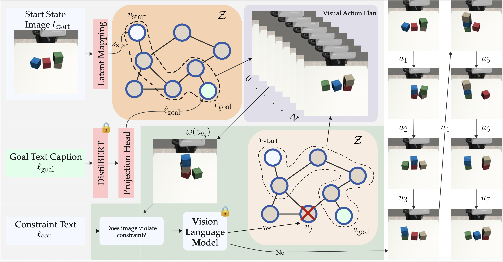
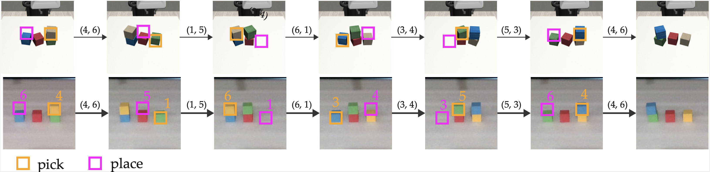
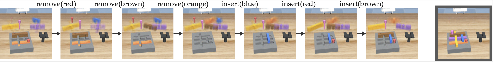

Vision-based long-horizon planning is essential yet challenging in robotics, especially when robots must adhere to specified constraints. Images of the current state along with natural language for goal specification and runtime constraints offer an intuitive input modality for such tasks. Despite advances in Vision-Language Models (VLMs), they still struggle to provide coherent long-horizon reasoning from raw observations, especially under constraints.
We present LG-LSR, a language-guided planner combining planning in a low-dimensional learned latent space with VLM-based se- mantic capabilities.
Specifically, we propose a cross-modal alignment method enabling semantic correspondence between VLM-generated text captions and visual latent representations. This is used to find goal states in the latent space, where a graph-based structure enables planning. An iterative pruning procedure based on VLM verification is additionally proposed to enforce runtime constraints. Finally, a sim-to-real procedure is designed based on the cross-modal alignment. Across a range of simulation and real world experiments, we find that LG-LSR is able to accomplish more visual planning tasks and obey constraints compared to VLM-based baselines.

An overview of LG-LSR on constrained block stacking task. Given a training dataset, our method will learn a latent space where clustered states form a graph. A frozen VLM (e.g., Gemini 2.5 Flash) produces a goal caption, a frozen DistilBERT encodes it, and a projection head maps it to zˆj to plan to text defined goals. Each planned state is checked by a frozen VLM (e.g., GPT 5 for constraint violations. Violating nodes are pruned and planning repeats on the pruned graph.

Loading prompt...Loading prompt...Loading prompt...
Loading prompt...Loading prompt...Loading prompt...Loading prompt...@article{,
author = {Anonymous Authors},
title = {Language-Guided Visual Action Planning with Constraints Using Latent Space Roadmap and Vision-Language Models},
journal = {},
year = {},
}